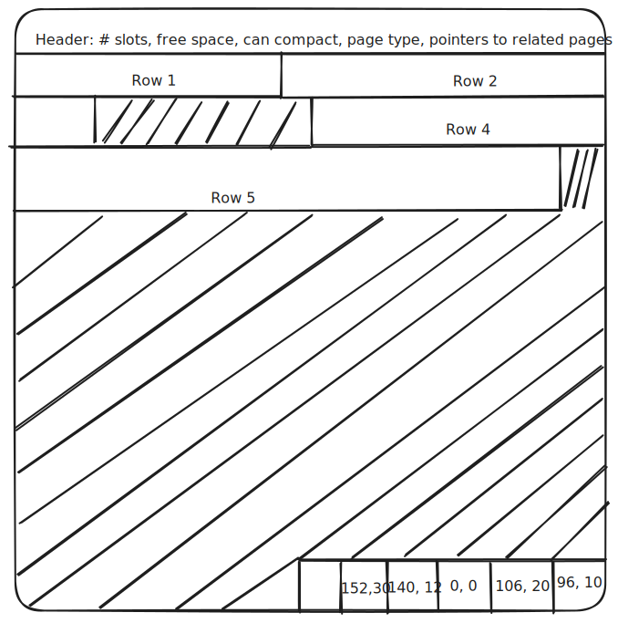

Paging the data
Table of Contents
An overview of the concept of slotted pages in a storage engine along with details on how it was implemented
Intro
At the foundation of any database engine is the storage layer - responsible for handling the actual persistence and retrieval of data on disk. In this post, I will go over database pages, the universally adopted abstraction for how the engine interacts with the disk. The theoretical part of the article does not propose any new design, but rather summarizes how databases typically structure and use pages. I then walk through my own implementation of database pages, which, while custom-built, follows closely the structure and behavior described in the theoretical overview.
Why pages
A database page (also referred to as a block) is the fundamental unit of storage and I/O inside most database engines. Instead of reading or writing arbitrary bytes, the database organizes its files into fixed-size blocks - generally 4 KB to 16 KB - that contain a header, records (rows) or index entries, and free space.
Pages are the basis for how data is stored on disk, cached in memory, and manipulated by internal components such as B-trees, buffer pools, and write-ahead logging.
Databases use pages because they provide deterministic control over I/O. Fixed-size blocks allow the engine to align with disk hardware, optimize sequential reads, minimize fragmentation and avoid expensive random access. This also makes caching predictable: a buffer pool can simply hold X frames, each corresponding to exactly one page, allowing clearer decisions about eviction, tracking dirty pages, and pinning.
Pages also decouple the database from operating system memory management. Relying on the OS pages or the OS cache would make eviction, flushing, and write ordering unpredictable or outside the control of the engine. Databases need to know exactly when a block has been written, how to track its state relative to the write-ahead log, and how to restore it after a crash. Having their own page format and buffer management system gives them full control over these constraints.
The page abstraction is also essential for data structures like B-trees and for space management within tables. Each index node fits within a single page, making lookups and modifications more efficient. More on B-tree backed indexes in a later post.
As with many other areas and modules, the OS is the enemy of the engine, and the database will choose to implement its own mechanisms, rather than relying on the OS provided abstractions in order to be able to optimize and define its behavior exactly as it wants it.
Slotted pages
The most common implementation for this is called a slotted page. The reasoning behind this concept is explained in the Why slotted pages section - but first I will quickly go over the structure and the behavior of this kind of page by using my design as an example.
Structure and behavior
I have configured a page to be 4KB in size - I have chosen this size mostly because it is more manageable to look through while debugging and because I do most of my work on a Macbook with an SSD that has a 4KB block size as well, so that matches nicely.
Pages are basically a contiguous chunk of 4096 bytes structured as a 96-byte header, immediately followed by a data region growing right (or down) and ending with a slot array growing left (or up): 
Header
The header represents the first 96 bytes of the page and stores metadata about the page itself: the total number of slots that are currently in use, the amount of free space remaining on the page, the type of the page (simple heap data page, index page, etc), various flags (e.g., fragmentation), pointers to the sibling pages (in the case of index pages).
These are stored as different data types: for example, a 16 bit integer is enough to store the total number of rows in the page - we can never expect to have a large number of rows. Flags require even fewer bits, while other fields like sibling pointer might require more.
Slots
The idea behind the slotted page is pretty simple: whenever you insert a row, you place it wherever there is some room in the page, then you create a new entry in the slot array - this entry will store the offset at which the row starts and its length. The row is now identified by its slot number.
Reading
Because the slots are fixed size (4 bytes in my case - 2 for the offset, 2 for the length), it is trivial to read directly the i-th slot - e.g. reading slot at index 3 simply means positioning your read-head at PAGE_SIZE - (slot_number + 1) * SLOT_SIZE = 4096 - (3 + 1) * 4 = 4080, then reading the first 4 bytes (in the image above, that would give us the slot (140, 12)).
Iterating over all the rows in the page is equally simple - you just iterate over the slot array, dereference each slot and output the corresponding row.
Updating
As said, inserting a new row means finding some free space in the page and creating a new slot.
Deletion, on the other hand, is straightforward - you can just delete (or invalidate) the slot - deleting the actual bytes of the row is optional and can be postponed, since that segment of the page is no longer accessible and will eventually be overwritten. A process called compaction will rearrange all the existing rows in a contiguous segment, removing any fragmentation that may have occurred after deletions.
As for updating, if the new row has the same size (or smaller), the update can be done in place. If it's greater, the updated value will need to be placed somewhere else in the page and the slot's offset will be updated - the slot number, however, will remain unchanged.
Why slotted pages
The way I see it, slotted pages solve two main problems:
- How to handle variable length rows
- How to encapsulate storage details from outside objects
Variable length rows
Say we didn't have slotted pages, but wanted to store rows that vary in length. How would we do that? The most direct approach would be to store them as [ row_length | row_bytes]- e.g. [ 5 | 'hello']. This allows you to know exactly how many bytes you need to read to obtain a single row.
But what about random access? What happens if you need to read the 3-rd row? You have no idea where it starts exactly, so you need to: read the length of row 1, move the cursor at current + row_1_length, read the length of row 2, move the cursor at current + row_2_length, then finally read the row you need.
This can become cumbersome and inefficient.
With slots on the other hand, because they are fixed size, you can determine exactly where the 3rd slot is stored, which will point you to where the row itself is stored. In our case, the 3rd slot (index = 2) will be placed at PAGE_SIZE - (index + 1) * SLOT_SIZE = 4096 - 3 * 4 = 4084. By computing this offset and setting the read head at that location, we are able to directly read the two shorts that compose the slot.
Encapsulating the details
The other advantage of slots is that it allows you to hide from the outside world the way the page organizes itself underneath.
Again, say we didn't have the slot array. If you look at the drawing of the page from the start of the post, you might notice that row 3 is missing because it was deleted. How would we handle the page operations now, say, for reading row #4? We would read row 1, then row 2 - and then? We would need some sort of pointer to indicate that we need to skip some bytes to be able to get to what is labelled as row 4, but in reality, is the now 3rd row. Or we would need to compact (remove fragmentation) on each delete.
But if we were to compact on each delete - this means that row 4 now becomes row 3. This can become quite problematic. What if there is an index out there for this table? We would need to not only remove the old row from it, but also update rows 4, 5, 6, ... to become rows 3, 4, 5, ...
The problem is that the logical ordering of the rows is dependent on the physical ordering and organization on disk.
This is very limiting and causes dependencies left and right. Even if external objects don't know the exact offset of the row, they are dependent on the place where it is stored and rows themselves are dependent on one another.
Slots allow us to hide all of these details from the outside world.
By only exposing the slot numbers to external objects, we are free to organize the rows however we want - fragmented, compacted, in increasing or decreasing order of their size, all even and all odd, does not matter because the slot array stays constant. Deleting a row and compacting the page means moving around the only the row data - the slots stay unchanged. If you consult the drawing again, you will notice that the 3rd slot is (0,0) - that is because the row was deleted and the slot invalidated, but not removed from the array. This means that after a compaction, the space that was occupied by the row will be overwritten, but the (0,0) slot will remain in the array.
As a result, row 4 will remain row 4, regardless of where it is stored in the page, so external objects like indexes will not be affected by any internal reorganization of the page.
Implementation
Java
The original Java implementation defined a class called SlottedPage which contained a ByteBuffer of size 4096 with the actual content from disk. It also exposed numerous methods for interacting with the page - reading and writing flags from the header, retrieving, inserting or updating rows, etc. Additionally, a SortedPage class extended the SlottedPage and offered overrides for B-tree index nodes.
This grew a bit cumbersome for several reasons:
- Inheritance sometimes sucks - had a bug I spent several days fixing, only because I was expecting an object to be a
SortedPage, but was in reality an unsortedSlottedPage, which broke some B-tree invariants. This could have been prevented by a better implementation or by paying more attention, but I feel my point still stands. - The classes grew quite big - exposing a different method for every header value, every behavior - this led to large objects.
- (A me problem) Not a lot of attention paid to data duplication - there were flows where the main byte array of the page was duplicated and copied around as it was passed from method to method.
Rust
The new implementation is pretty similar conceptually to the Java one. However, in a Rust-centric approach I tried to focus more on the ownership side of things and ensure that the data is not duplicated in memory for no good reason. I also leveraged the fact that you can have multiple impl blocks across different files for the same struct - this allowed me to group methods in different files based on their functionality.
The next question was how to actually store the page bytes in memory and how it would play along with the buffer. The way I saw it, I had two main possible directions:
- The page owns the byte array, while the buffer cache owns the pages via some data structure.
- The buffer manager allocates and owns a pool of frames where each page is placed -> then the page is only a pointer to that memory region.
Based on my research, the second option seems more popular or idiomatic. I chose, however, to go with the first one because it felt easier to avoid doing all that pointer arithmetic on the buffer pool & dealing with lifetimes. In a way it also felt more modern & more Rust (might be wrong here tho).
The base of it all is the Page struct:
The page_id is just an in-memory page identifier comprised of filename_hash::page_number_within_file. Only the page number within the file is stored in the page header - the filename itself will be known through the use of system catalogs.
The data field stores the main byte array of the page in a Box on the heap. I chose an actual array over something like a Vec as the size will never change so the overhead of the Vec seemed unnecessary.
HeaderRef and HeaderMut
The first order of business was to provide access to the header of the page. Instead of going with a set of getters and setters on the main page, I decided to create two new structs, HeaderRef and HeaderMut:
pub
pub
These structures borrow from the main page byte array a slice the size of the header - namely the first 96 bytes. HeaderRef offers an immutable view into the header of the page via getters, while HeaderMut offers a mutable view via getters and setters. The word view here is relevant to me - that is because these structs are zero-copy - they do not duplicate the underlying byte array in any way. Because their slices are also limited to the header size, they cannot affect the rest of the page, should there be any bug. I also decided to split them in mutable and immutable to keep the trend of Rust - if you want to modify something, you should opt in for the mutable one.
The getters and setters are implemented via a macro that takes as param the flag/value name and data type, to avoid having to write a large number of methods manually.
SlotArrayRef and SlotArrayMut
Similarly to the header, I also provide access to the slot array via the following structs:
pub
pub
The reasoning here is the same: slice into the main array and encapsulate behavior in a more organized and testable way.
These structs are instantiated with a slice the size of the slot array at the time of its creation: if the page contains 3 slots, the slice will be 3*4 bytes, or more precisely the last 12 bytes of the page.
They offer methods for retrieving slots, and in the case of SlotArrayMut, insert/update slots.
They also expose the slot structs - a zero-copy view of a single slot:
pub
pub
Page API
With the exception of the main Page struct, all behavior and structs are internal to the page crate. The page exposes a set of public methods that are accessible outside of the crate - for creation of the page itself and for retrieval/insertion/deletion/update of rows. Underneath, these public methods leverage this structs and encapsulate the behavior of the page. The main impl blocks are split into separate files: one for reading rows, one for inserting, etc. All of these internal methods can be tested in place where needed.
Error handling
I tried to create an error enum for every main flow: InsertError, ReadRowError, etc. Underneath, these are derivable for more concrete errors: all header operations can return HeaderError, all slot operations can return SlotError, etc.
All of these errors can be converted to a PageOpError, which represents the crate's catch-all error type:
HeaderError
/
PageError - PageOpError - SlotError
\
\-ReadRowError
\
InsertError
....
Additionally, the PageError is the crate's public error type and the only one exposed to the outside world.
It is a struct containing a PageOpError and an additional PageId. A trait to more easily attach the page id is also implemented:
pub
Remaining work
At the time of writing this, only the insertion and retrieval of rows has been implemented (besides the header & slot array accessors). I started by taking the Java implementation as-is and translated it to Rust and right now I am trying to improve it by (1) splitting it into more granular and testable chunks, (2) optimizing and improving the overall logic. After that, I will apply the same principle to compaction, deletion & updates.
Worth noting tho, this only covers heap unsorted pages. The B-tree index pages are a whole other thing that will be tackled separately, but that might be pushed a bit further down the priority list.
Resources
These resources helped inform my understanding of database page architecture:
- Microsoft SQL Server Documentation — Pages and Extents Architecture Guide
- Kalen Delaney — Microsoft SQL Server 2012 Internals
- CMU Intro to databases